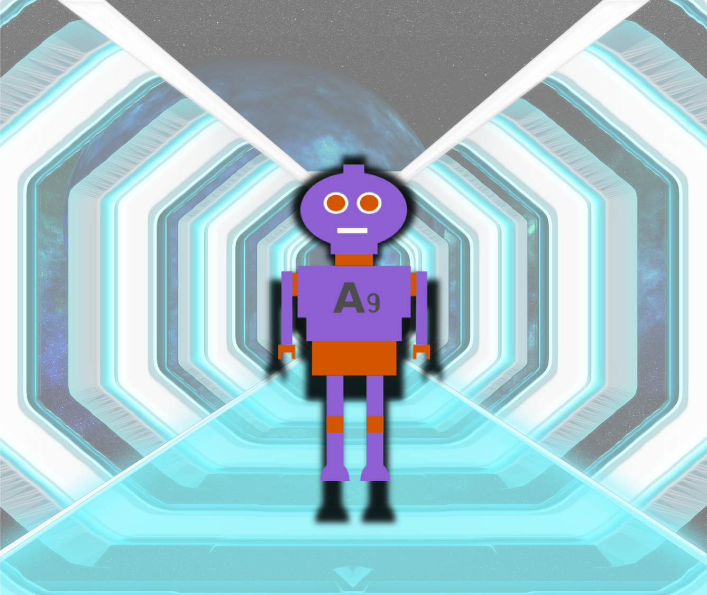
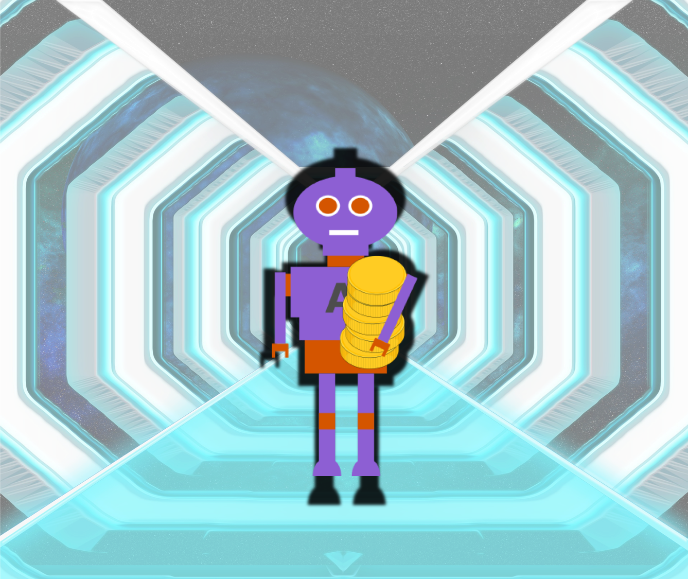
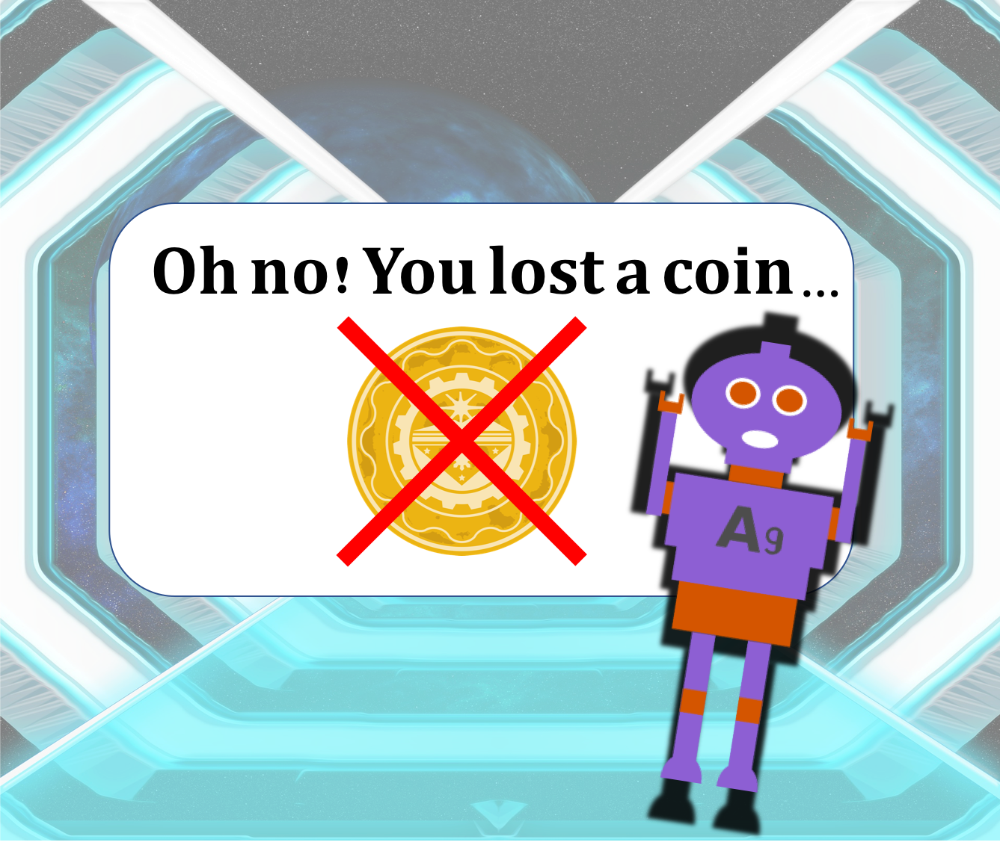

<!doctype html>

<html lang="en">

    <head>
        <title>Online Game</title>
        <meta charset="UTF-8">
        <!--  **FOR PAVLOVIA DEPLOYMENT** [NB Palovia hosts jsPsych6.0.0 and jquery 2.2.0.min so no need to include in lib]--> 
        <script type="text/javascript" src="lib/vendors/jquery-2.2.0.min.js"></script>
        <script type="text/javascript" src="lib/vendors/jspsych-6.0.0/jspsych.js"></script>
        <script type="text/javascript" src="lib/vendors/jspsych-6.0.0/plugins/jspsych-html-keyboard-response.js"></script>
        <script type="text/javascript" src="lib/vendors/jspsych-6.0.0/plugins/jspsych-survey-text.js"></script>
        <script type="text/javascript" src="lib/vendors/jspsych-6.0.0/plugins/jspsych-instructions.js"></script>
        <script type="text/javascript" src="lib/vendors/jspsych-6.0.0/plugins/jspsych-survey-multi-choice.js"></script>
        <script type="text/javascript" src="lib/vendors/jspsych-6.0.0/plugins/jspsych-image-keyboard-response.js"></script>
        <script type="text/javascript" src="static/lib/jspsych-image-slider-response2.js"></script>
        <script type="text/javascript" src="lib/vendors/jspsych-6.0.0/plugins/jspsych-fullscreen.js"></script>
        <script type="text/javascript" src="lib/jspsych-pavlovia-3.0.0.js"></script>
        <link href="lib/vendors/jspsych-6.0.0/css/jspsych.css" rel="stylesheet" type="text/css" />

        <style>
          body {
              font-size: 20px;
              }
          img {
              width: 600px; 
            }
          #jspsych-image-slider-response-response {
            padding: 2px 2px;
          } 
        </style>
        <!--  **FOR PSITURK DEPLOYMENT**
        <script src="/static/js/psiturk.js" type="text/javascript"></script> 
        <script type="text/javascript">
            // These fields provided by the psiTurk Server
            var uniqueId = "{{ uniqueId }}"; 
            var adServerLoc = "{{ adServerLoc }}"; 
            var mode = "{{ mode }}"; 
        </script>  -->    

    </head>

    <body>
        <!-- <div id="jspsych-target"> </div> -->  

    <script type='text/javascript'>

  /*****************************do condition randomisation********************************************/  
  // for random selection of condition (which robot is CS+/CS-)
  var cond= jsPsych.randomization.sampleWithReplacement(["1", "2"],1)[0];
  //store randomisation group in data as "cond"
  jsPsych.data.addProperties({
    condition: cond
  });

  /***********************************module to initiate pavlovia*************************************/
  //initiate connection with pavlovia.org
  var pavlovia_init = {
    type: "pavlovia",
    command: "init"
    // on_finish: function() {
    //     jsPsych.data.get().addToLast({phase:"ignore"});
    //   }
  };

  /******************************************load psiturk*********************************************
  //create object 'psiturk' client side for data storage 
  var psiturk = new PsiTurk(uniqueId, adServerLoc, mode);    

  /*************************************define welcome message****************************************/
  var welcome = {
    type: "html-keyboard-response",
    stimulus: "Welcome to the online game! Please press any key to begin.",
    on_finish: function() {
        jsPsych.data.get().addToLast({phase:"ignore"});
      }
  };

  var enter_fullscreen = {
    type: 'fullscreen',
    fullscreen_mode: true
  };

 /**********************************define ID info collection********************************/
  var ID_ok=0;

  var demogs = {
    type: "survey-text",
    questions: [{prompt: "<p>Please enter your login credential in the box below.</p>"+ 
                         "<p>This is a 7 digit code consisting of both letters and numbers, that can be found in the email inviting you take part in this part of the study.</p>"}],
    required: true,
    on_finish:  function() {
        var answer = jsPsych.data.get().last(1).select('responses').values; var answer = JSON.parse(answer).Q0;
        if (answer.length == 7) {  
            ID_ok=1;
            }
        jsPsych.data.get().addToLast({phase:"demog"});
	      //psiturk.recordTrialData(jsPsych.data.getLastTrialData());
        return ID_ok;                 
         }
  };

  /*************if ID doesn't pass length test ***********/
  var wrong_text ={
    type: "html-keyboard-response",
    stimulus: "<p>Sorry, it looks like the login credential you entered is the wrong length. Please " +
          "double check your credential in your emails, and try again.</p>" +
          "<p>Press <strong>space bar</strong> to continue. </p>",
    choices: [32],
    on_finish: function() {
      jsPsych.data.get().addToLast({phase:"demog"});
      //psiturk.recordTrialData(jsPsych.data.getLastTrialData()); 
    }
  };

  var demog_if_node={
      timeline: [wrong_text, demogs],
      conditional_function: function(){
        if (ID_ok==0) {
          return true;
        } else {
          return false;
        }
      }
  };
 
/********************************define instructions block*********************************************/
 	var instructions_block ={
 		type: "instructions",  
 		pages: [
      //pg1//
      "<p><strong>Game Instructions</strong></p>"+

      "<p>You are stranded on a spaceship, and need to reach your escape pod with as many gold space coins as possible in order to help you get back to planet Earth!</p>"+

      "<div class='center-content'></img></div>"+
      "<p> </p>",
      
      //pg2//
      "<p>On the way to your escape pod, you will encounter different kinds of <strong>helper robot</strong>, who you will need to use to help you <strong>carry your coins</strong>.</p>"+

      "<div class='center-content'></img></div>"+
      "<p> </p>",

      //pg3//
      "<p>Unfortunately, some of the robots you will meet are <strong>faulty</strong>, and may drop some of your precious coins, causing them to be <strong>lost</strong>! </p>"+

      "<div style='width:1000px;'>"+
      "<div style='float:left;text-align:center;'></img>" +
      "<p class='small'><strong>helpful robot</strong></p></div>" +
      "<div style='float:right;text-align:center;'> </img>" +
      "<p class='small'><strong>faulty robot</strong></p></div>"+
      "<div style='clear:both'> </div>"+
      "<p> </p>",

      //pg4//
      "<p>As you travel through different sectors of the ship, your job is to <strong>make predictions</strong> about which robots you think might lose your coins, and which you think will keep them safe.</p>"+

      "<p>Although your predictions will not change the outcomes this time (meaning <strong>you can't stop some of your coins getting lost</strong> during your journey), the record of your predictions will be used to help other space travellers in the future - so it is important to try and be <strong>as accurate as possible</strong>!</p>"+

      "<div class='center-content'></img></div>"+

      "<p> </p>",

      //pg5//
      "<p><strong>How to play</strong>.</p>" +
      "<p> </p>" +
      "<p>When you encounter each robot, you will be asked to <strong>rate</strong> how likely you think that robot is to <strong>lose</strong> some of your coins using a <strong>sliding bar</strong>.</p>" +

      "<p>You can use your mouse to move the position of the slider, then press the button labelled 'Enter Prediction' to submit your answer.</p>" +

      "<p>You will then find out whether that particular robot safely transferred or ended up losing some of your coins.</p>" +

      "<p>You will move through <strong>different zones</strong> on the spaceship in order to reach your goal.</p>" +

      "<p>You can take a breaks at different points in your mission for as long as your like. The time needed to play the game will be about <strong>10 minutes</strong>, not including breaks.</p>" +

      "<p>Remember, your ratings won't stop you losing points this time - but try and make your predictions as accurate as you can, in order to help future space travellers!</p>" +

      "<p> </p>",

      //pg8//
      "<p>There will now be a short quiz to check you understand exactly how the game will work.</p>" +

      "<p>Press <strong>next</strong> to continue.</p>"+
      "<p> </p>"
      ],
      show_clickable_nav: true,
      allow_keys: false,
      on_finish: function() {
        jsPsych.data.get().addToLast({phase:"instr"});
        //psiturk.recordTrialData(jsPsych.data.getLastTrialData()); 
      }
 	};

/******************************define instructions comprehension test block**********************************/
  var instr_accuracy=0;

  var TF_options=["True", "False"]

  var instructions_test_block = {  
    type: "survey-multi-choice",    
    preamble: ["<p><strong>Quiz</strong></p>" +
              "<p> </p>" +
              "<p>For each statement below, please select whether you think it is <strong>true</strong> or "+
              "<strong>false</strong>.</p>"],
    questions: [ 
      {prompt: "1. The aim of the game is to try and lose as many space coins as possible", options: TF_options, required: true},
      {prompt: "2. All the robots you encounter will try and steal your coins", options: TF_options, required: true},
      {prompt: "3. It is important to try and rate as accurately as possible whether a robot might lose my coins, in order to help future space travellers!", options: TF_options, required: true},
      ],
    on_finish: function() {    
      var answers = jsPsych.data.get().last(1).select('responses').values; 
      var answers = JSON.parse(answers);
      var correct=[ "False","False","True"];
      var nQuest=3; 
      var correct_ans_count =0;
        for (var i=0; i < nQuest; i++) {
          var questID = "Q"+i;
          var ans = answers[questID];
          if (ans == correct[i]) {  
            correct_ans_count++;
            }
        }
      instr_accuracy = (correct_ans_count / nQuest);
      jsPsych.data.get().addToLast({phase: "instr"});
      //psiturk.recordTrialData(jsPsych.data.getLastTrialData()); 
      return instr_accuracy;
      }
  };

  /*************if score not high enough re-run instructions and quiz***********/
  var threshold =0.95;    //threshold to pass instructions comprehension test

  var wrong_text ={
    type: "html-keyboard-response",
    stimulus: "<p>Sorry, you didn't get quite enough of the quiz questions right. Please " +
          "re-read the instructions and try again.</p>" +
          "<p>Press <strong>space bar</strong> to continue. </p>",
    choices: [32],
    on_finish: function() {
      jsPsych.data.get().addToLast({phase:"instr"});
      //psiturk.recordTrialData(jsPsych.data.getLastTrialData()); 
    }
  };

  var instr_if_node={
      timeline: [wrong_text, instructions_block, instructions_test_block],
      conditional_function: function(){
        if (instr_accuracy<threshold) {
          return true;
        } else {
          return false;
        }
      }
  };

 /**********************************segway to main experiment*******************/
  var continue_text ={
    type: "html-keyboard-response",
    stimulus: "<p>Well done!</p>" +
          "<p> </p>" +
          "<p>When you are ready, press <strong>space bar</strong> to start the game!</p>",
   choices: [32],
   on_finish: function() {
      jsPsych.data.get().addToLast({phase:"instr"});
      //psiturk.recordTrialData(jsPsych.data.getLastTrialData()); 
      //psiturk.finishInstructions();
   }
  };


 /**********************************define test stimuli and trial blocks**************************************/
  /********initialize stuff********/
  var fb_dur=2000;     //feedback_duration (ms)

  var welcomeZone1={
    type: "image-keyboard-response",
    stimulus: "static/img/zone1.png",
    response_ends_trial: true
  };

  var welcomeZone2={
    type: "image-keyboard-response",
    stimulus: "static/img/zone2.png",
    response_ends_trial: true
  };

  var CSplusNoLossZ1 ={
    type: "image-keyboard-response",
    stimulus: "static/img/"+cond+"/CSplus_noLoss_zone1.png",
    response_ends_trial: false,
    stimulus_duration: fb_dur,
    trial_duration: fb_dur
  };

  var CSplusLossZ1 ={
    type: "image-keyboard-response",
    stimulus: "static/img/"+cond+"/CSplus_Loss_zone1.png",
    response_ends_trial: false,
    stimulus_duration: fb_dur,
    trial_duration: fb_dur
  };

  var CSminusNoLossZ1 ={
    type: "image-keyboard-response",
    stimulus: "static/img/"+cond+"/CSminus_noLoss_zone1.png",
    response_ends_trial: false,
    stimulus_duration: fb_dur,
    trial_duration: fb_dur
  };

  var CSplusNoLossZ2 ={
    type: "image-keyboard-response",
    stimulus: "static/img/"+cond+"/CSplus_noLoss_zone2.png",
    response_ends_trial: false,
    stimulus_duration: fb_dur,
    trial_duration: fb_dur
  };

  var CSminusNoLossZ2 ={
    type: "image-keyboard-response",
    stimulus: "static/img/"+cond+"/CSminus_noLoss_zone2.png",
    response_ends_trial: false,
    stimulus_duration: fb_dur,
    trial_duration: fb_dur
  };

  var if_node1 ={
      timeline: [CSplusNoLossZ1], 
      conditional_function: function() {
      if (outcome==1) {
        return true;
      } else {
        return false;
        }
      }
    };

  var if_node2 ={
      timeline: [CSplusLossZ1], 
      conditional_function: function() {
      if (outcome==2) {
        return true;
      } else {
        return false;
        }
      }
    };

  var if_node3 ={
      timeline: [CSminusNoLossZ1], 
      conditional_function: function() {
      if (outcome==3) {
        return true;
      } else {
        return false;
        }
      }
    };

  var if_node4 ={
      timeline: [CSplusNoLossZ2], 
      conditional_function: function() {
      if (outcome==4) {
        return true;
      } else {
        return false;
        }
      }
  };

  var if_node5 ={
      timeline: [CSminusNoLossZ2], 
      conditional_function: function() {
      if (outcome==5) {
        return true;
      } else {
        return false;
        }
      }
  };

  var fix_length = function() {
    return Math.floor(Math.random() * 1500) + 1000;
  };

  var fix1 ={
    type: "image-keyboard-response",
    stimulus: "static/img/fix1trans.png",
    response_ends_trial: false,
    stimulus_duration: fix_length,
    trial_duration: fix_length
  };

  var fix2 ={
    type: "image-keyboard-response",
    stimulus: "static/img/fix2trans.png",
    response_ends_trial: false,
    stimulus_duration: fix_length,
    trial_duration: fix_length
  };

  var test_block_end = {
      type: "html-keyboard-response",
      choices: [32],
      stimulus: "<p><strong>End of block!</strong></p>"+
                "<p>You may take a short break.</p>"+
                "<p>Press <strong>space bar</strong> when you're ready to to continue.</p>",
      on_finish: function() {   
        //psiturk.saveData();
      }
  };
  
  ////trial type key: (frequency and number as per Hartley & Gershamn, 2015)
  //tt1=CSplus-noUS(noloss) in context A (zone1)
  //tt2=CSplus-US(loss) in context A (zone1)
  //tt3=CSminus in context A (zone1)
  //tt4=CSplus-noUS(noloss) in context B (zone2)
  //tt5=CSminus in context B (zone2)
  //tts are in ratio 4:2:4 per block of 10 trials in conditioning blocks (*4 blocks=40 trials total)
  //tts are in ratio 4:0:4 per block of 8 trials in extinction blocks (*5 blocks=40 trials total)
  //conditioning and extinction blocks in context A (zone 1) are continuous with each other
  //make all blocks 10 trials long for ease (but preserve original frequency and ratio of tts)
  //UPDATE: change all conditions to 30 rather than 40 trials total as otherwise just too boring...
  var tts = [ 3, 2, 3, 2, 2, 3, 1, 3, 1, 3,  //conditioning block 1 in context A
              2, 1, 2, 3, 1, 3, 3, 1, 1, 1,  //conditioning block 2 in context A
              1, 2, 1, 1, 3, 1, 1, 1, 2, 1,  //conditioning block 3 in context A
              //3, 3, 3, 3, 2, 1, 1, 3, 3, 3,  //conditioning block 4 in context A
              1, 3, 1, 3, 3, 1, 1, 3, 1, 3,  //extinction block 1 in context A
              1, 3, 1, 1, 3, 3, 3, 3, 1, 1,  //extinction block 2 in context A
              3, 3, 3, 1, 1, 1, 3, 3, 1, 1,  //extinction block 3 in context A
              //1, 3, 1, 1, 1, 3, 3, 3, 1, 3,  //extinction block 4 in context A
              4, 5, 5, 5, 4, 4, 5, 4, 4, 5,  //extinction block 1 in context B
              4, 5, 5, 5, 5, 5, 5, 5, 4, 4,  //extinction block 2 in context B
              5, 4, 4, 5, 5, 4, 4, 4, 4, 4];  //extinction block 3 in context B
              //5, 4, 4, 4, 5, 5, 4, 4, 5, 5]; //extinction block 4 in context B

  var all_trials = [];
  for(var i=0; i < tts.length; i++) {
      if(tts[i]==1 | tts[i]==2) {all_trials[i] = {stimulus: "static/img/"+cond+"/CSplus_zone1.png",
      data: {CS: 1, tt: tts[i]}}
      }
      if(tts[i]==3) {all_trials[i] = {stimulus: "static/img/"+cond+"/CSminus_zone1.png",
      data: {CS: 2, tt: 3}}
      }
      if(tts[i]==4) {all_trials[i] = {stimulus: "static/img/"+cond+"/CSplus_zone2.png",
      data: {CS: 1, tt: 4}}
      }
      if(tts[i]==5) {all_trials[i] = {stimulus: "static/img/"+cond+"/CSminus_zone2.png",
      data: {CS: 2, tt: 5}}
      }
  };

 /*********TEST BLOCKs*********/                
  var test_block = {
    timeline:[]
  };
  var outcome = [];  
  var trl_indx=0;
  var trl_tbreak=10;  //block length: 10 trials 
  var trl_zone2_begins=60;

  for (var i=0; i < all_trials.length; i++) {         
    var trial = {
      type: 'image-slider-response2',                                         
      stimulus: all_trials[i].stimulus,
      //stimulus_duration: 3000,
      //trial_duration: 3000,
      response_ends_trial: true,
      //prompt: "<p><font size='100%'>How likely do you think this robot is to lose a coin?</font></p>",
      labels: ["keep safe","lose coin"],
      button_label: "Enter Prediction",
      on_finish: function() {
        jsPsych.data.get().addToLast({trl_indx: trl_indx});
        var trial_data=jsPsych.data.get().last(1);
        var tt = all_trials[trl_indx].data.tt; 
        var CS = all_trials[trl_indx].data.CS;
        jsPsych.data.get().addToLast({tt: tt, CS: CS});    
        if(tt==1) {outcome=1;}
        if(tt==2) {outcome=2;}
        if(tt==3) {outcome=3;}
        if(tt==4) {outcome=4;}
        if(tt==5) {outcome=5;}
        trl_indx++;    
        jsPsych.data.get().addToLast({outcome: outcome, phase: "task"});
        //psiturk.recordTrialData(jsPsych.data.getLastTrialData()); 
        return outcome, trl_indx;
       }
   	};

    var one_whole_trial_z1 ={
      timeline: [trial, if_node1, if_node2, if_node3, fix1]  //stitch together one whole trial
    };
    var one_whole_trial_z2 ={
      timeline: [trial, if_node4, if_node5, fix2]  //stitch together one whole trial
    };
    var one_whole_trial_break ={
      timeline: [trial, if_node1, if_node2, if_node3, if_node4, if_node5, test_block_end]  //" for end of block
    };

    var first_trial_zone1={
      timeline: [welcomeZone1, trial, if_node1, if_node2, if_node3, fix1]
    }; 
    var first_trial_zone2={
      timeline: [welcomeZone2, trial, if_node4, if_node5, fix2]
    };

    
    if (i==0)                       //if first trial (of zone 1)
    {
      test_block.timeline.push(first_trial_zone1);
    }
    else if (i==trl_zone2_begins) //if first trial of zone 2
    {
      test_block.timeline.push(first_trial_zone2);
    }
    else if (i%trl_tbreak==0)  //if end of block trial(length=trl_tbreak) 
    {
      test_block.timeline.push(one_whole_trial_break);
    }
    else if (i<trl_zone2_begins)  //if normal trial zone 1  
    {
      test_block.timeline.push(one_whole_trial_z1);
    }
    else                           //if normal trial zone 2
    {
      test_block.timeline.push(one_whole_trial_z2);
    }  
  };

  
  /************************segway2*****************************/
  var continue_text2 ={
    type: "html-keyboard-response",
    stimulus: "<p><strong>Congratulations, you escaped to the shuttle!</strong></p>" +
          "<p> </p>" +
          "<p>Thank you for playing.</p>" +
          "<div class='center-content'></img></div>"+
          "<p> </p>" +
          "<p>Press <strong>space bar</strong> to end the game</p>",
   choices: [32],
   on_finish: function() {
      jsPsych.data.get().addToLast({phase:"ignore"});
      //psiturk.recordTrialData(jsPsych.data.getLastTrialData()); 
   }
  };

  /************************************module to terminate pavlovia*******************************************/
  //terminate connection with pavlovia.org
  var pavlovia_finish = {
    type: "pavlovia",
    command: "finish"
    // on_finish: function() {
    //     jsPsych.data.get().addToLast({phase:"ignore"});
    //   }
  };

  /***********************************create overall experiment timeline *************************************/
  var experiment =[];
    experiment.push(pavlovia_init)  //initiate connection with pavlovia
    experiment.push(welcome)
    experiment.push(enter_fullscreen);
    experiment.push(demogs); 
    experiment.push(demog_if_node);   //ask for login credential again if seems not right ID according to length check
    experiment.push(demog_if_node);   // "

    experiment.push(instructions_block);      
    experiment.push(instructions_test_block);
    experiment.push(instr_if_node); //executes instructions and instructions test again if accuracy below threshold
    experiment.push(instr_if_node); // "

    experiment.push(continue_text);
    experiment.push(test_block); 

    experiment.push(continue_text2); 
    experiment.push(pavlovia_finish)  //finish connection with pavlovia 
      
  /********************************************start the experiment*****************************************/
   // prompt_resubmit = function() {
   //    replaceBody(error_message);
   //    $("#resubmit").click(resubmit);
   // };
   // resubmit = function() {
   //    replaceBody("<h1>Trying to resubmit...</h1>");
   //    reprompt = setTimeout(prompt_resubmit, 8000);
   //    psiTurk.saveData({
   //      success: function() {
   //        clearInterval(reprompt); 
   //              psiturk.computeBonus('compute_bonus', function(){finish()}); 
   //      }, 
   //      error: prompt_resubmit
   //    });
   // };

  //function startExperiment() {
    jsPsych.init({
      //display_element: 'jspsych-target', //$('#jspsych-target'),                                
      timeline: experiment,
      experiment_structure: experiment, 
      on_data_update: function() {
                  //console.log(jsPsych.data.get().json());    //DB ONLY
              }
      // on_finish: function() {
      //             psiturk.computeBonus('compute_bonus');  //more secure route than calculating client-side
      //             setTimeout(psiturk.saveData({           //sends data via server, then completes HIT
      //                 success: function() { 
      //                               psiturk.completeHIT(); //don't wrap computeBonus as tooYoung won't have -->
      //                               }        
      //                 //error: prompt_resubmit
      //                 }), 6000)                            //add wait to allow compute_bonus to finish exec
      //         }
        });
    //}

    </script>

    </body>

</html>
